笔记1：对回归方法的认识
- 问题引入
假设有一个房屋销售的数据如下：
| 面积(m\^2) | 销售价钱（万元） |
|---|---|
| 123 | 250 |
| 150 | 320 |
| 87 | 160 |
| 102 | 220 |
| … | … |
这个表类似于北京 5 环左右的房屋价钱，我们可以做出一个图，x 轴是房屋的面积。y
轴是房屋的售价，如下：
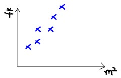
如果来了一个新的面积，假设在销售价钱的记录中没有的，我们怎么办呢？
我们可以用一条曲线去尽量准的拟合这些数据，然后如果有新的输入过来，我们可以在将曲线上这个点对应的值返回。如果用一条直线去拟合，可能是下面这：
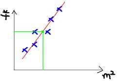
绿色的点就是我们想要预测的点。
首先给出一些概念和常用的符号。
房屋销售记录表：训练集(training set)或者训练数据(training data),
是我们流程中的输入数据，一般称为 x
房屋销售价钱：输出数据，一般称为 y 拟合的函数（或者称为假设或者模型）：一般写做
y = h(x)
训练数据的条目数(#training
set),：一条训练数据是由一对输入数据和输出数据组成的输入数据的维度 n
(特征的个数，#features)
这个例子的特征是两维的，结果是一维的。然而回归方法能够解决特征多维，结果是一维多离散值或一维连续值的问题。
- 学习过程
下面是一个典型的机器学习的过程，首先给出一个输入数据，我们的算法会通过一系列的过程得到一个估计的函数，这个函数有能力对没有见过的新数据给出一个新的估计，也被称为构建一个模型。就如同上面的线性回归函数。
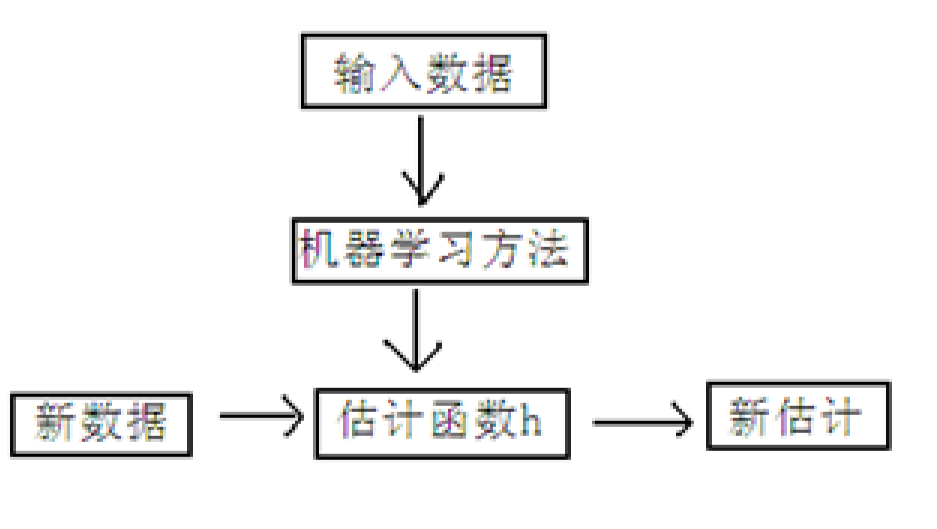
线性回归
线性回归假设特征和结果满足线性关系。其实线性关系的表达能力非常强大，每个特征对结果的影响强弱可以有前面的参数体现，而且每个特征变量可以首先映射到一个函数，然后再参与线性计算。这样就可以表达特征与结果之间的非线性关系。
我们用 X1，X2..Xn 去描述 feature 里面的分量，比如
x1=房间的面积，x2=房间的朝向，等等，我们可以做出一个估计函数：
$$
h\left( x \right) = h_{0}\left( x \right) = \theta_{0} + \theta_{1}x_{1} + \theta_{2}x_{2}\
$$
θ 在这儿称为参数，在这的意思是调整 feature
中每个分量的影响力，就是到底是房屋的面积更重要还是房屋的地段更重要。为了如果我们令
X0 = 1，就可以用向量的方式来表示了：
$$
h_{0}\left( x \right) = \theta^{T}X
$$
我们程序也需要一个机制去评估我们 θ 是否比较好，所以说需要对我们做出的 h
函数进行评估，一般这个函数称为损失函数（loss function）或者错误函数(error
function)，描述 h 函数不好的程度，在下面，我们称这个函数为 J 函数
在这儿我们可以做出下面的一个错误函数：
$$J(\theta) = \frac{1}{2}\ \sum_{i = 1}^{m}{(h_{0}(x))}$$
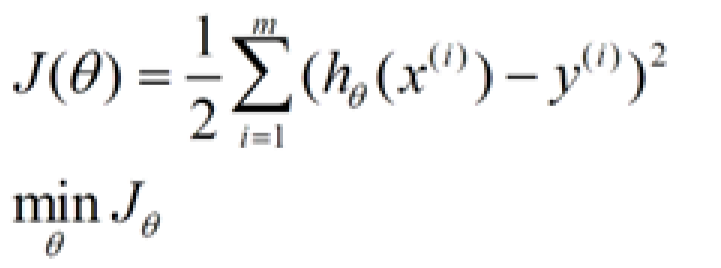
这个错误估计函数是去对 x(i)的估计值与真实值
y(i)差的平方和作为错误估计函数，前面乘上的 1/2
是为了在求导的时候，这个系数就不见了。
至于为何选择平方和作为错误估计函数，讲义后面从概率分布的角度讲解了该公式的来源。
如何调整 θ 以使得 J(θ)取得最小值有很多方法，其中有最小二乘法(min
square)，是一种完全是数学描述的方法，和梯度下降法。
梯度下降法
在选定线性回归模型后，只需要确定参数 θ，就可以将模型用来预测。然而 θ 需要在 J(θ)
最小的情况下才能确定。因此问题归结为求极小值问题，使用梯度下降法。梯度下降法最大的问题是求得有可能是全局极小值，这与初始点的选取有关。
梯度下降法是按下面的流程进行的：
1）首先对 θ 赋值，这个值可以是随机的，也可以让 θ 是一个全零的向量。
2）改变 θ 的值，使得 J(θ)按梯度下降的方向进行减少。
梯度方向由 J(θ)对 θ
的偏导数确定，由于求的是极小值，因此梯度方向是偏导数的反方向。结果为
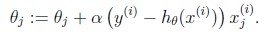
迭代更新的方式有两种，一种是批梯度下降，也就是对全部的训练数据求得误差后再对 θ
进行更新，另外一种是增量梯度下降，每扫描一步都要对 θ
进行更新。前一种方法能够不断收敛，后一种方法结果可能不断在收敛处徘徊。
一般来说，梯度下降法收敛速度还是比较慢的。
另一种直接计算结果的方法是最小二乘法。
最小二乘法
将训练特征表示为 X 矩阵，结果表示成 y
向量，仍然是线性回归模型，误差函数不变。那么 θ 可以直接由下面公式得出
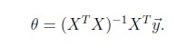
但此方法要求 X 是列满秩的，而且求矩阵的逆比较慢。
选用误差函数为平方和的概率解释
假设根据特征的预测结果与实际结果有误差∈(𝑖)，那么预测结果𝜃𝑇𝑥(i)和真实结果𝑦(𝑖)满足下式：
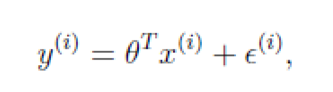
一般来讲，误差满足平均值为 0 的高斯分布，也就是正态分布。那么 x 和 y
的条件概率也就
是
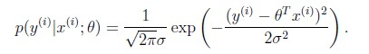
这样就估计了一条样本的结果概率，然而我们期待的是模型能够在全部样本上预测最准，也就是概率积最大。这个概率积成为最大似然估计。我们希望在最大似然估计得到最大值时确定
θ。那么需要对最大似然估计公式求导，求导结果既是
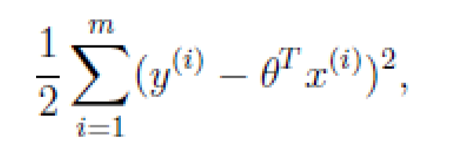
这就解释了为何误差函数要使用平方和。
当然推导过程中也做了一些假定，但这个假定符合客观规律。
带权重的线性回归
上面提到的线性回归的误差函数里系统都是
1，没有权重。带权重的线性回归加入了权重信息。
其中 x 是要预测的特征，这样假设的道理是离 x
越近的样本权重越大，越远的影响越小。这个公式与高斯分布类似，但不一样，因为w(i)不是随机变量。
基本假设是:

其中假设$$\omega^{(i)}$$符合公式:
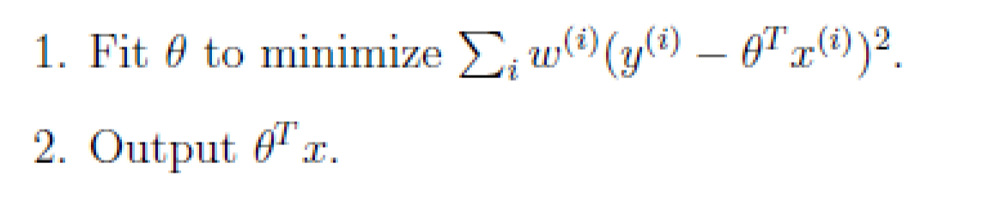
此方法成为非参数学习算法，因为误差函数随着预测值的不同而不同，这样 θ
无法事先确定，预测一次需要临时计算，感觉类似 KNN。
分类和对数回归
一般来说，回归不用在分类问题上，因为回归是连续型模型，而且受噪声影响比较大。
如果非要应用进入，可以使用对数回归。
对数回归本质上是线性回归，只是在特征到结果的映射中加入了一层函数映射，即先把特征线性求和，然后使用函数
g(z)将最为假设函数来预测。g(z)可以将连续值映射到 0 和 1 上。
对数回归的假设函数如下，线性回归假设函数只是𝜃𝑇𝑥。
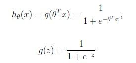
对数回归用来分类 0/1 问题，也就是预测结果属于 0 或者 1
的二值分类问题。这里假设了二值满足伯努利分布，也就是
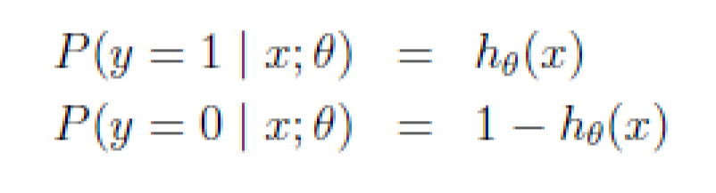
当然假设它满足泊松分布、指数分布等等也可以，只是比较复杂，后面会提到线性回归
的一般形式。
与第 7 节一样，仍然求的是最大似然估计，然后求导，得到迭代公式结果为
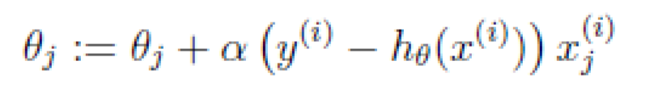
可以看到与线性回归类似，只是𝜃𝑇𝑥(i)换成了ℎ𝜃(𝑥(𝑖))，而ℎ𝜃(𝑥(𝑖))实际上就是𝜃𝑇𝑥(i)经过
g(z)映射过来的。
牛顿法来解最大似然估计
第 7 和第 9
节使用的解最大似然估计的方法都是求导迭代的方法，这里介绍了牛顿下降
法，使结果能够快速的收敛。 当要求解f(θ) = 0时，如果 f 可导，那么可以通过迭代公式
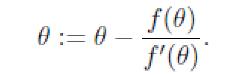
来迭代求解最小值。
当应用于求解最大似然估计的最大值时，变成求解ℓ′(𝜃) = 0的问题。
当θ是向量时，牛顿法可以使用下面式子表示
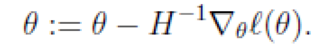
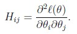
牛顿法收敛速度虽然很快，但求 Hessian 矩阵的逆的时候比较耗费时间。 当初始点 X0
靠近极小值 X 时，牛顿法的收敛速度是最快的。但是当 X0
远离极小值时，牛顿法可能不收敛，甚至连下降都保证不了。原因是迭代点 Xk+1
不一定是目标函数 f 在牛顿方向上的极小点。
一般线性模型
之所以在对数回归时使用
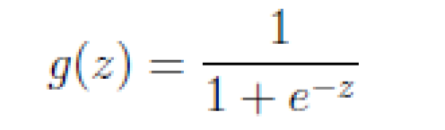
的公式是由一套理论作支持的。 这个理论便是一般线性模型。
首先，如果一个概率分布可以表示成
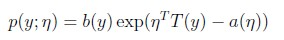
时，那么这个概率分布可以称作是指数分布。
伯努利分布，高斯分布，泊松分布，贝塔分布，狄特里特分布都属于指数分布。
在对数回归时采用的是伯努利分布，伯努利分布的概率可以表示成
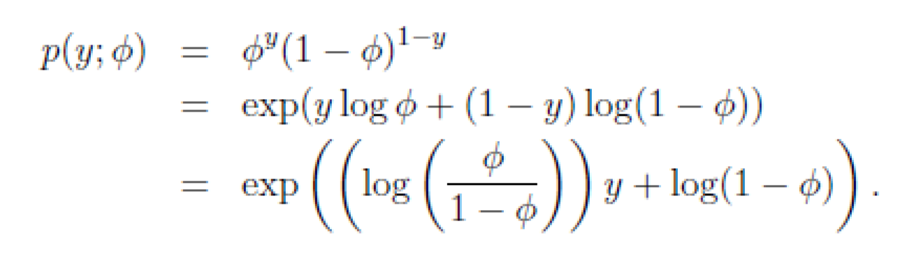
其中
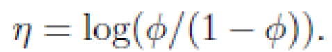
得到
这就解释了对数回归时为了要用这个函数。
一般线性模型的要点是 $$y|x$$; θ 满足一个以
为参数的指数分布，那么可以求得
的表达式。
） 给定 x，我们的目标是要确定T(y)，大多数情况下T(y) =
y，那么我们实际上要确定的是h(x)，而h(x) = E[y|x]。（在对数回归中期望值是
，因此 h 是
；在线性回归中期望值是
，而高斯分布中η = μ，因此线性回归中 h=𝜃𝑇𝑥）。
）$$\ = \ \theta Tx\$$
11.Softmax 回归
最后举了一个利用一般线性模型的例子。 假设预测值 y 有 k 种可能，即
y∈{1,2,…,k}
比如 k=3
时，可以看作是要将一封未知邮件分为垃圾邮件、个人邮件还是工作邮件这三类。

即式子左边可以有其他的概率表示，因此可以当做是 k-1 维的问题。
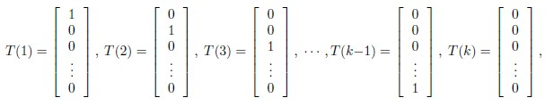
T(y)这时候一组 k-1 维的向量，不再是 y。即 T(y)要给出 y=i（i 从 1 到
k-1）的概率 。
应用与一般线性模型：
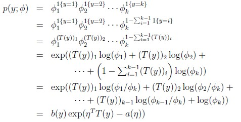
那么：
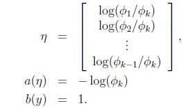
最后得：
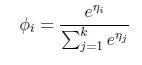
而$$y = i$$ 时：
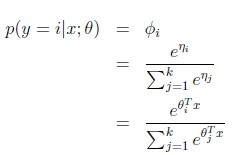
求得期望值：
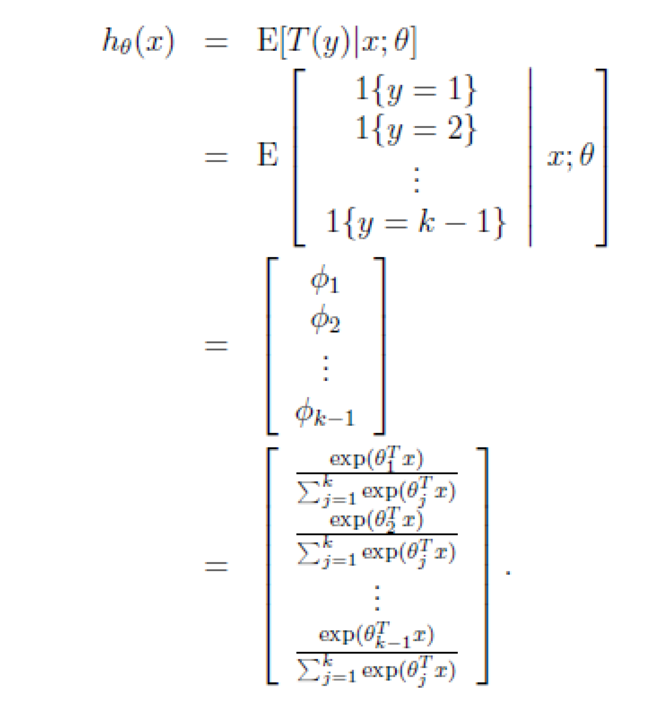
那么就建立了假设函数，最后就获得了最大似然估计 ：
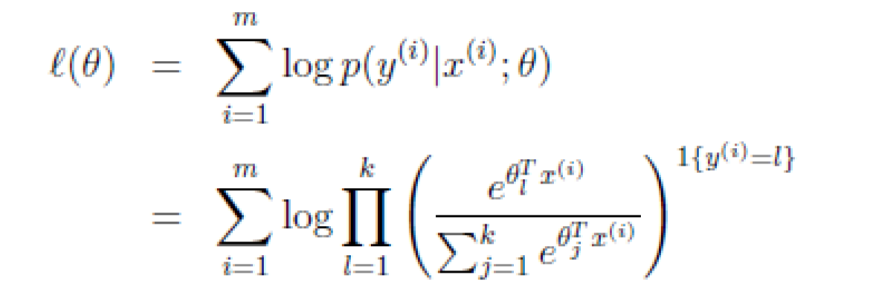
对该公式可以使用梯度下降或者牛顿法迭代求解。 解决了多值模型建立与预测问题。